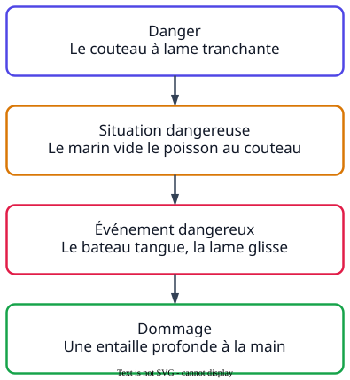

Ce que demandent les sujets
- « Identifier le danger auquel le salarié est exposé. »
- « Compléter le tableau : danger, situation dangereuse, événement déclencheur, dommage. »
La méthode

À retenir
- Danger
- source possible de dommage.
- Situation dangereuse
- situation dans laquelle l'opérateur est exposé au danger.
- Événement déclencheur
- événement qui, dans la situation dangereuse, peut causer le dommage ; on dit aussi événement dangereux.
- Dommage
- atteinte à la santé : immédiate (blessure) ou après une exposition répétée.
- Risque professionnel
- possibilité qu'un travailleur exposé à un danger subisse un dommage. Danger et risque ne sont pas synonymes.
Un exemple de bac
« Identifier les différents éléments contribuant à l'apparition de l'atteinte à la santé de l'éboueur en complétant le tableau. »
Sujet 2023, Antilles-Guyane
InsuffisantDanger : les déchets. Dommage : il se blesse.
MaîtriséDanger : un objet coupant ou piquant dans les déchets. Situation dangereuse : l'éboueur vide le vrac à la main. Événement déclencheur : il se pique avec un déchet. Dommage : une plaie qui peut s'infecter.
Les quatre éléments sont attendus, chacun précis : « les déchets » est trop vague, « il se blesse » ne dit pas quel dommage.